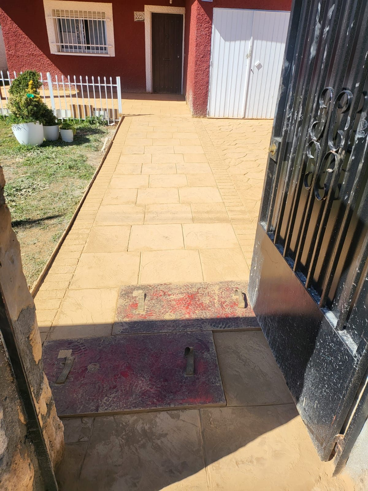

Asesoramiento directo
Hablamos con quien va a ejecutar y controlar la obra.
Nacho Paveade
Combinamos experiencia de obra, criterio decorativo y una ejecución cuidada.

Trabajamos con particulares, profesionales y empresas. Cada proyecto comienza con un diagnóstico honesto y se adapta al uso real del espacio, desde un acceso residencial hasta una gran superficie.
No ofrecemos un acabado aislado: cuidamos la preparación, los encuentros, el color, el sellado y la entrega para que el conjunto tenga coherencia y dure.
Hablamos con quien va a ejecutar y controlar la obra.
Molde, color y solución elegidos para el entorno y el uso.
Fases, accesos y tiempos explicados antes de empezar.
Atención a preparación, juntas, sellado y mantenimiento.
Zona de trabajo
Trabajamos en toda España y estudiamos cada desplazamiento según la ubicación, las dimensiones y las características de la obra.